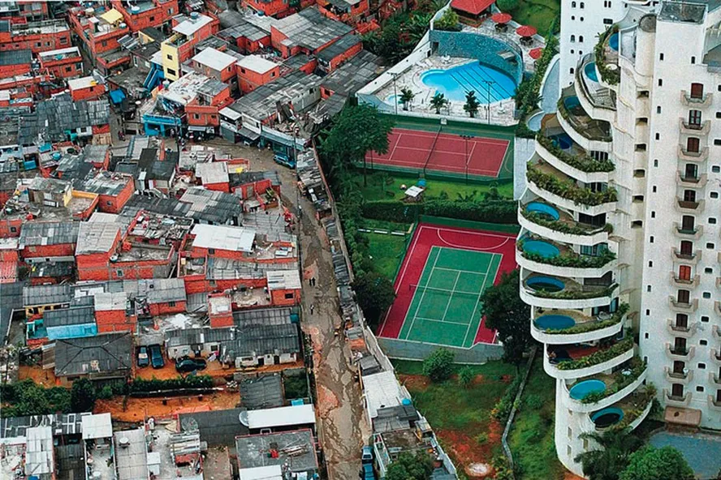
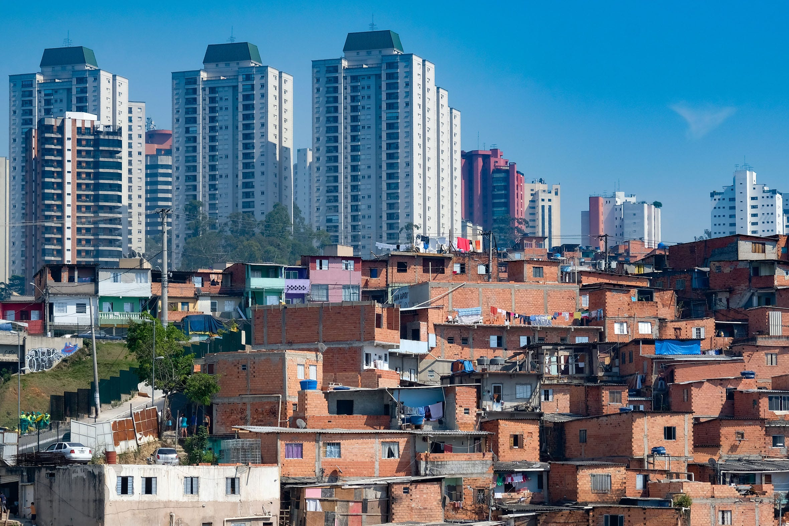

Desigualdade Regional
E. E. Antoine de Saint ExuperyAs desigualdades regionais referem-se às desigualdades entre as regiões, entre estados e entre cidades. As desigualdades no Brasil não ocorrem somente dentro das cidades, mas também entre as regiões do país.
Imagens ilustrando as grandes desigualdades regionais entre moradias na cidade.
No Brasil, existem vários tipos de desigualdades sociais, no entanto, as desigualdades não se limitam apenas a fatores como cor, posição social e raça, ainda convivemos com as desigualdades regionais, que se referem às desigualdades entre as regiões, entre estados e entre cidades.
Podemos tomar como exemplo, levando em conta o panorama da pobreza nos estados, a região Nordeste, nessa região se encontra os estados que possuem maior concentração de pessoas com rendimento de até meio salário. Outra disparidade marcante entre o Centro-sul e o Nordeste está no desenvolvimento humano.
“Os homens nascem iguais, mas no dia seguinte já são diferentes.”
A aplicação de reformas tributárias, dos gastos públicos, da infraestrutura financeira e regulamentos, assim como dos mercados de trabalho também pode revelar-se útil.
Oferecer acesso a creches de qualidade e a um custo acessível libera mais mulheres para trabalhar, além de gerar emprego diretamente.
- Sofia Silva Santos
- Pedro Mendonça
- Isaac Ferreira
- Dimitry Alves Mendes
- Vinicius Mejia
- Nicolas Jardim